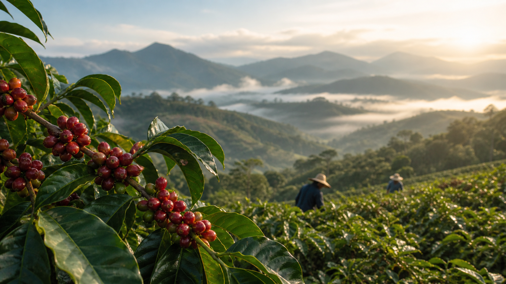

全球咖啡产区概览
咖啡起源于非洲埃塞俄比亚高原，如今已遍布全球热带地区。不同地区的气候、土壤和加工方式造就了各具特色的咖啡风味。

埃塞俄比亚
作为咖啡的发源地，埃塞俄比亚拥有世界上最多样化的咖啡品种。这里出产的咖啡通常具有花香、柑橘和浆果的复杂风味，尤其是著名的耶加雪菲(Yirgacheffe)产区，以其明亮的酸度和优雅的花香闻名于世。
主要产区：
- 耶加雪菲 - 花香、柑橘调性
- 西达摩 - 果香、酒香调性
- 哈拉尔 - 浓郁、香料调性

哥伦比亚
哥伦比亚是世界上最大的阿拉比卡咖啡豆生产国之一。其咖啡以平衡的口感、适中的酸度和坚果、巧克力的风味著称。哥伦比亚的地理条件非常适合咖啡生长，安第斯山脉提供了理想的海拔高度和温度变化。
主要产区：
- 麦德林 - 平衡、温和
- 亚美尼亚 - 醇厚、果香
- 波哥大 - 清爽、酸甜

巴西
巴西是全球最大的咖啡生产国和出口国，约占全球产量的三分之一。巴西咖啡通常口感醇厚，酸度较低，带有坚果和巧克力的风味。大部分巴西咖啡用于调配浓缩咖啡，为其提供丰富的crema和顺滑的口感。
主要产区：
- 米纳斯吉拉斯州 - 平衡、顺滑
- 圣保罗州 - 醇厚、低酸
- 巴伊亚州 - 果香、高酸

印度尼西亚
印度尼西亚以生产独特的曼特宁咖啡而闻名，这种咖啡经过特殊的湿刨法处理，具有浓郁的泥土和草本风味。印尼的咖啡种植主要集中在苏门答腊岛、爪哇岛和苏拉威西岛等地区，其独特的加工方法造就了深沉厚重的口感。
主要产区：
- 苏门答腊 - 醇厚、泥土味
- 爪哇 - 平衡、香料味
- 苏拉威西 - 强烈、果香味

牙买加
牙买加蓝山咖啡被誉为世界上最昂贵和最优质的咖啡之一。它生长在牙买加蓝山山脉的高海拔地区，气候凉爽且多雾，使咖啡豆成熟缓慢，形成细腻均匀的质地和温和均衡的风味，几乎没有苦味。
主要产区：
- 蓝山 - 平衡、无苦味
- 莫恩山 - 类似蓝山但价格更实惠

意大利
虽然意大利不是咖啡产地，但它是现代咖啡文化的发源地。意大利人发明了浓缩咖啡机，并创造了拿铁、卡布奇诺等多种经典咖啡饮品。意大利的咖啡文化强调社交性和仪式感，深刻影响了全世界的咖啡消费模式。
主要贡献：
- 浓缩咖啡文化
- 咖啡吧台社交传统
- 多种意式咖啡饮品